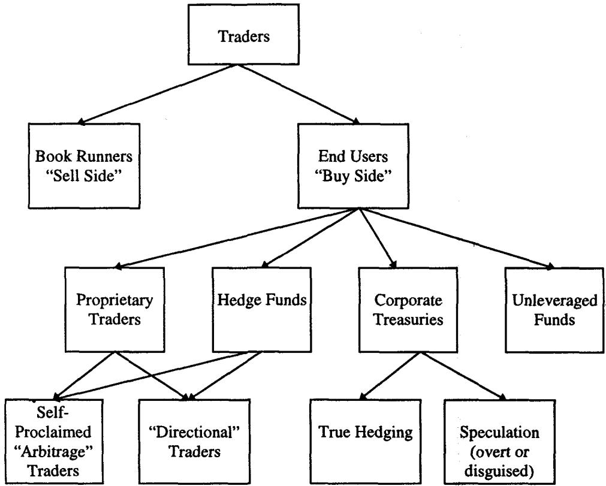
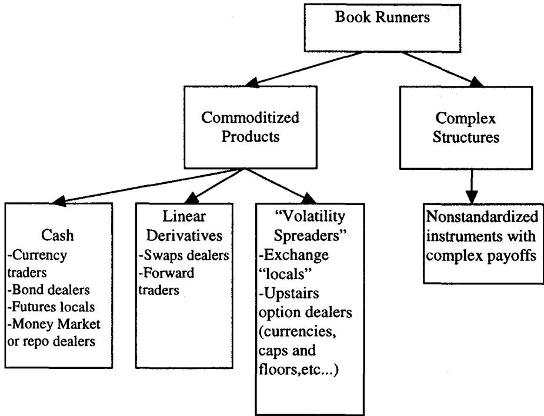
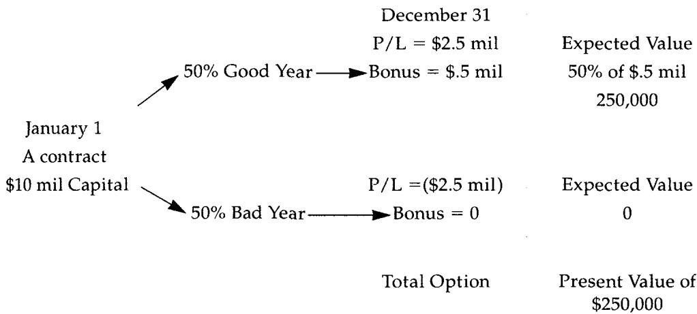
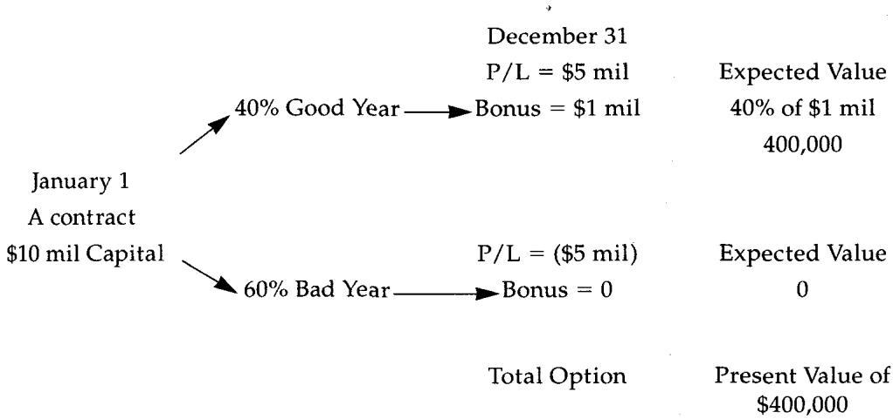
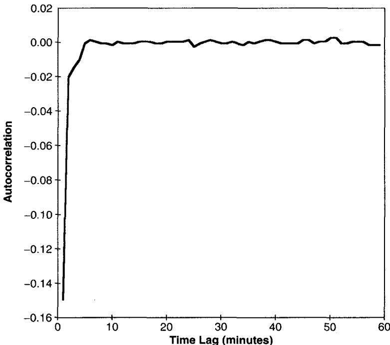
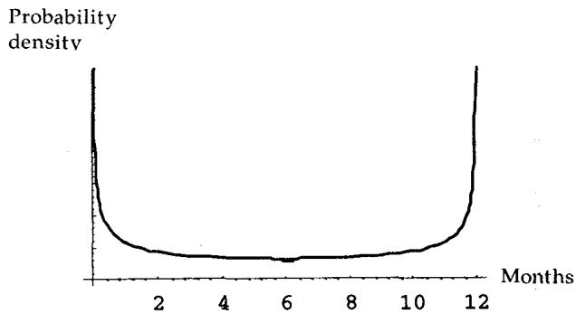

第三章：做市与用市（Market Making and Market Using）
Anybody can buy and sell. —— James C. Powers
导读：本章要解决的问题
前两章讲的是工具本身：怎么按曲率分类、怎么沿六个维度拆解一张合约。第三章把镜头从工具转向人和市场，要回答的核心问题是：在一个有摩擦、信息不对称、流动性会枯竭的真实市场里，不同角色靠什么赚钱，他们的盈亏分布服从什么规律，以及为什么"业绩好"常常是个统计幻觉。
对一个金融工程读者，这一章的价值有两层。第一层是市场微观结构（market microstructure）的实务图景：做市商、价格接受者、套利者各自的 modus operandi，潜规则，做市为何等价于短波动率。第二层、也是更深的一层，是概率论对交易者绩效的祛魅：随机游走的和与单条随机游走的终值行为完全不同，Borel-Cantelli 引理告诉你为什么总能找到一只写出《伊利亚特》的猴子，反正弦律告诉你为什么"一年里有半年赚钱半年亏钱"几乎不会发生，Dubins-Savage 告诉你正负 edge 下该如何下注。这些结论大多反直觉，却能用读者已经掌握的鞅论、中心极限定理、Lévy 反正弦律直接说清。
把全章压缩成五条主线：
- 做市商提供的是即时性（immediacy），报酬来自买卖价差，代价是被动、防御、信息上的劣势，本质上是短波动率。
- 产品从非标准化走向商品化是必然趋势，交易员会随产品商品化而迅速贬值（trader decay）。
- 自营部门为何普遍失败：分散化降低了管理者那个"期权"的价值，这是 basket rule 的直接推论。
- 价值交易（value trading）与博傻（greater fool）是两种自洽的风格，分别押注内在价值与外在信号，对时间的态度相反。
- 交易者绩效里运气占比极高，且随交易频率下降而上升；用 Sharpe 比率衡量非线性头寸是错的。
下面沿原文小节顺序展开，并在每个节点补全概率论与微观结构理论的映射。

图 3.1 是本章的人物地图。交易池行话把参与者分成三层：local（场内做市商）、paper（终端客户）、arb（套利者）。local 是纯价格敏感、完全由流动性驱动的一群，享有时间和空间上的优势；paper 指终端客户，名字来自过去 runner 拿着写在特制纸条上的订单在交易池里奔跑传递的年代，local 总是乐于和 paper 交易，因为他们觉得自己占了便宜，一个想跟其他 local 交易的 local 通常得把订单伪装成 paper 的样子；arb 是套利者，或做市商与终端用户的混合体，他们扛着 SP500 上那个声名狼藉的程序化交易（现货-期货套利），把流动性从一个市场搬到另一个市场，当然要收一点小费。
一、做市商与价格接受者（Book Runners versus Price Takers）
做市商也叫 book runner，拿一个产品对着库存（inventory，通常叫 "book"）做交易。他们挂出愿意买入的价（bid）和愿意卖出的价（offer），认为自己能享有正的期望收益、公平赔率，因为他们指望赚到市场中价与买卖价之间那一段的大部分，实现所谓交易正性（transaction positivity）。这正好和市场里大多数其他参与者相反，后者按工具流动性的高低成比例地承担交易成本。
价格接受者（price taker）就是 market user，功能和 book runner 截然相反。做市商充当流动性导管，站在终端用户之间收取报酬。两者态度上最根本的差别在于价格敏感度的方向：做市商持仓意愿随价格变得更有吸引力而上升（价格越低越想买）；market user 不是这样，除非遇到流动性洞（liquidity hole）。Taleb 给出一条很重要的约束：一个在所有交易里都贯彻强烈方向观点的做市商，最终会让公司破产，因为他的成交量会变得单边，导致头寸荒谬地累积。做市商必须中性，这不是修养问题，是生存约束。
学术文献常区分 "upstairs"（楼上）和场内交易员。"upstairs" 指价格接受者；如今复杂产品的做市商也坐在"楼上"。Taleb 提醒现实没有纯粹形态：没有哪个操作者是完全没有观点的做市商，也没有哪个投资者完全价格不敏感。多数投资者会努力压低交易成本，有时甚至通过挂限价单去赚价差。有效的做市商会**"靠"在头寸上（lean）**：保持一个核心的多头或空头底仓，并据此偏移报价，且这种偏移通常是防御性的。牛市趋势里，book runner 本能地害怕被买盘冲成空头，于是把 bid 和 offer 都往上抬，体现对多头的偏好（熊市反之）。价格接受者则可能因价格变得不那么有吸引力而推迟进场，偶尔甚至因为价格调整而建了一个与本意相反的头寸。价格敏感度有时是负的：一个信奉趋势的操作者会被诱使在价格更高时买、更低时卖。
做市商与 market user 最后的分野落在一句话上：前者必须防御，后者有进攻的自由。 这条不对称是理解后面所有内容的基础。
理论映射：库存模型与价格敏感度的符号
做市商"价格越低越想买、且必须中性"在微观结构理论里对应库存模型（inventory models, Garman / Amihud-Mendelson / Ho-Stoll）。做市商的最优报价是其库存的函数：库存偏多时下调双边报价以吸引买盘、抑制卖盘，把库存拉回目标水平。Taleb 说的"lean on a position"和"shading bids and offers"正是库存模型里报价随库存线性偏移的交易语言版。而"贯彻方向观点会破产"对应库存模型的稳定性条件：若报价不向均值回复的目标库存收敛，库存方差发散，破产概率趋于一。做市商被迫中性，是因为他的效用函数里有一个对库存方差的惩罚项，这与一个可以自由押方向的投机者有着本质不同的目标函数。
二、商品化产品与非标准化产品（Commoditized and Nonstandardized Products）
市场分两类：进入流动阶段的**商品化（commoditized）产品，和工具仍不成熟、新颖的非标准化（nonstandardized）**产品（见图 3.2）。商品化产品成交量大、流动性高，但 edge 相对小、买卖价差窄、人才严重过剩。它们的好处主要在于做市商能用高成交量弥补窄价差，"快得到的五分钱胜过慢得到的一块钱（a fast nickel is better than a slow dollar）"。它们竞争激烈到除了市场感觉还需要某种 sophistication，一个人人都在用、却没人能精确定义的东西。
商品化产品有标准协议、消除了多数意外，通常在 dealer 之间交易、不断对冲彼此的风险。银行间市场（interbank market）的存在就是标准化的试金石。 它们从最简单的现金产品，一直排到较低形态的奇异期权（比如单障碍敲出）。非标准化产品，比如结构（structures），支付特殊到属于工具本身，需要专门的定价能力，比如雇一个常驻数学家。相比之下商品化产品可以用市售软件（通常有缺陷）定价管理。非标产品可能需要为每笔交易单独写程序，定价 bug 的发生率也更高。一个挂钩多个资产、障碍要重设六次、到期日还不确定（可展期）的期权，没法轻松录进商业风险系统，得专门写计算机子程序去追踪它的希腊字母。

图 3.2：商品化与非标产品的分类。商品化像折扣店，标准尺码、标准价、高流量；非标像定制西装，高价签、小流量。Taleb 给出一条历史规律：所有成功的非标产品最终都会商品化。 我们当年开始交易期权时它们大多还是非标的，市场却迅速从一类滑向另一类；五年前难以定价的互换结构，现在交给初级交易员就能做。
表 3.1 把两类产品的差异列全：
| 商品化产品 | 非标准产品 |
|---|---|
| 价格敏感 | 产品设计敏感 |
| 超市式产品 | 定制产品 |
| 买卖价差窄 | 价差宽，甚至没有双边报价 |
| 银行间交易，常通过 broker | 只在金融机构与终端用户之间交易 |
| 标准定价公式 | 未经检验的定价 |
| 需要交易天赋与经验 | 需要定价能力、数学素养 |
| 成交量高 | 成交量低 |
| 标准风险管理系统 | 定制系统，需常驻程序员 |
Option Wizard：交易员的贬值（Trader Decay）
随着产品 sophistication 上升，交易员会迅速过时，这在多数市场里已经很明显。与多数职业的从业者不同，交易员没有被给予（或不给自己）足够的时间去适应新产品、学新技术。他们持续承受盈利压力，被迫专注于"产出"，否则就加入华尔街裁员者的行列。于是交易员给自己找一个 niche，一直榨取到这个 niche（和他本人）终结为止。
此外，持有一个交易头寸需要极大的智力投入，交易员可能被消耗到大脑其他功能都慢下来。Taleb 的比喻很贴切：像个人电脑的 RAM 被一个后台运行的程序重度占用。过去投资于员工发展的华尔街公司，如今被挤压成"清理（cleanups）"，一个交易员"基本上只值他最近一笔交易那么多（as good as his last trade）"。这部分解释了多数公司里商品化产品与复杂衍生品之间的隔离：新人带来廉价的 sophistication 但没有交易经验，他们又会迅速贬值，被下一茬博士替换。Taleb 记下交易员 S 的两难：要么休一个学习假、放弃现职并冒着回不来的风险，要么留任、变得更富但被淘汰。
这一段不需要理论映射，但值得记住它的实务含义：人力资本在交易行业是一种快速衰减的资产，衰减速度由产品商品化的速度决定。 这与本章后面"做市商是短波动率"的判断同构，交易员本人的职业生涯也是一个短期权，收着 niche 的租金，承担着被淘汰的尾部风险。
三类产品的交易风险
Taleb 接着按线性度把商品化产品里的交易风险分三层：
现金产品（cash products）：竞争使其回报更低，因为更流动、不需要复杂风险工具。好处是交易员能完全冲销交易风险，不必长期仓储合约。现金交易员只会出于主动选择才持仓过夜。
线性（或准线性）衍生品：对冲远期或互换的交易员会遇到期限错配（maturity mismatch），但他们的对冲比率不随时间和价格水平变化，除了一些外生量（如相关系数），很少经历对冲参数的变形（假设没有显著的凸性差异）。Taleb 有一个绝妙的判据：一个在荒岛上的互换交易员总能概括自己的头寸（但不能概括他的 P/L），而期权交易员必须查波动率、现货、利率等才知道自己的处境。 线性组合的敏感度在时间和价格变动中保持恒定，对冲可能因收益率曲线移动而失效，但这不必然让它变成非线性。这里的交易复杂性在于难以衡量对冲比率、以及不同期限的相对波动率和协方差，互换尤其是定价精度和插值精度立见高下的领域。
非线性衍生品：即期权相关工具和高凸性的固定收益证券，敏感度随时间或市场水平而变（第 11 章详谈）。做这些产品的市比做现金或线性产品更不轻松：交易员准备好为一笔交易仓储一段时间，通常直到到期，收取费用作为补偿。因为对冲比率和工具特性随时间或市场移动而变，book runner 必须对头寸做动态管理。新手期权交易员被教导对冲卖出期权只有一个办法，买回同一个期权；但衍生品头寸固有的不稳定、以及对时间和市场水平的依赖，使人根本不可能把自己定义为完全 "flat"，除非 book 里一笔交易都没有，而那极少发生。
盈利性：单个期权不流动，希腊字母整体很流动
Taleb 点出做市为何仍是个有吸引力的行当：虽然每个期权相对不流动，但整个市场对希腊字母而言非常流动。 不像一个交易不流动商品、又找不到相关流动替代品的做市商，期权做市商能轻松找到便宜的替代对冲。交易员的报酬来自比预期更快地冲销掉希腊风险（delta、vega、gamma）。这个特权来自做市商选择了去 run a book 并承担相应的 book 管理成本，进入壁垒恰恰是"把 book 作为一门持续生意来经营"这件事本身。仓储行权价风险的期权 local，能轻松用现有期权的组合去降低组合方差。
这一节是理解期权做市经济学的钥匙：流动性不在单个工具上，而在风险维度（希腊字母）上。 一个 strike 上的期权可能没人接，但它的 gamma、vega 可以用临近 strike、临近到期的其他期权对冲掉。做市商赚的是"把客户给的奇异风险，快速分解成可在希腊字母市场里冲销的标准风险"这中间的速度差和价差。
三、自营部门：分散化为何摧毁了管理者的期权（Proprietary Departments）
做市商与客户的区分也存在于多数交易公司和银行内部。公司通常受益于 "franchises" 或 "customer flows" 这两个与做市职能相连的术语，它们代表做市最初的使命：为客户提供服务并收费，只不过这里服务变成了承担风险、费用变成了买卖价差。1990 年代初，银行看到对冲基金客户的成功，试图通过设立内部对冲基金来复制客户的成功。许多失败了、不得不迅速清盘，把方向重新拉回传统的做市生意。
设立自营职能的理由当时显而易见：他们有富余的后台能力，使制造交易利润的边际成本极低；他们能接触到市场订单流的新鲜信息（无论这信息在交易中是否真的相关）；他们也和所有人一样，有从传统用途（比如给铁钉制造商的应收账款放贷）里释放出来的过剩资本。
然而业绩没有达到预期，Taleb 给的理由是本节的理论核心：他们与基金有不同的效用曲线，高管和管理者运作在与基金经理不同的效用函数下，期望收益也不同（基金是更冒险的交易者）。关键在于结构的差异：基金经理手里是一组各自具有期权特征的基金；银行管理者手里是一个写在一组（通常不相关的）资产上的期权。 按 basket rule（本书后面会讨论），这样一个篮子的期望收益会低得多。雪上加霜的是，银行还追求"分散化"，一个看起来时髦的好主意，却降低了管理者那个期权的价值。
理论映射：basket rule 就是篮子波动率低于成分波动率，期权对 vol 敏感
这是本章最该被理论体系吸收的一条，而它恰好是第一章 Elevator Bank 篮子的延续。在一个完全随机但"公平"的收益里（期望利润为零，鞅，"公平骰子"），一个写在波动工具上的期权，比一组期权的组合更值钱，或至少相等。 这条规则即使收益不是鞅也在一定程度上成立，它类似于"一个对波动率比对期望漂移更敏感的期权"的定价（图 3.3）。
数学上，单个期权与一篮子期权的价值差，来自波动率的次可加性。设管理者那个"写在一篮子交易员收益上的期权"价值为 ，而基金经理手里"一组写在各交易员收益上的期权"之和为 。篮子的方差是
只要相关性 ，篮子波动率严格小于成分波动率的加权和。由于期权价值随波动率单调递增（vega ），对波动率取期权再加总 先加总再取期权：
这正是 Jensen 不等式作用在凸的（对 vol 而言）期权价值函数上的结果。基金经理享有的是不等式左边（一组期权之和），银行管理者拿到的是右边（一个写在篮子上的期权），分散化把右边压得更低。"避免分散化"听起来像反常识的冒险建议，实则是 vega 可加性失败的直接推论。

图 3.3：交易员的期望收益随波动率上升。比较好交易员与坏交易员时，决定这个期权价格的是波动率，而非头寸的期望收益。

图 3.4：即便是糟糕的交易员，只要波动率够高，他那个"写在自己收益上的期权"仍然值钱。当然例子被简化了：坏交易员未必能轻易拿到资本，有时（但不总是）需要某种近似业绩记录的东西。
合成资本的例子
一个拥有 1000 万美元"合成资本（synthetic capital）"（银行虚拟分配给他的资本）的交易员，常常比一个手下管着更多资本的管理者更有盈利能力，因为管理者要面对"分散化"，即交易员之间相互抵消的收益。
例子：一个交易员有 1000 万合成资本，年"摆幅（swing）"是 25%，即他要么赚 250 万、要么亏 250 万。他的分成合约规定为 20%，且合约到期前不能被解雇。交易员的期望收益随波动率上升。一个深度实值的期权像一个期货：有盈利的交易员失去了 optionality，因为他的报酬会随亏损而减少。
机构里的管理者则管着一大群交易员，拿一块大得多的饼的 10%，于是有了分享更大上行的幻觉。错。交易员们的净和，尤其当他们不熟练时，会比一个人的 P/L 还少。解决办法是什么？不惜一切代价避免分散化。 雇一个高波动的交易员，好坏无所谓（这个区分意义甚小）。如果必须的话，确保所有交易员持有相同头寸，没人抵消别人。看到交易员在市场两侧持相反头寸是很令人沮丧的：其中一个会盈利、想买辆新车，但净额会因对冲成本锁定一笔亏损。公司不能要求交易员为亏损买单，除非他们是在亏回自己赚过的利润。
对比之下，一个有三个独立基金的基金经理，可以从每个基金抽 20%，与其他基金的结果无关。与交易台管理者不同，他享有三个期权之和。他甚至可以靠彼此（可能负相关的）独立基金来增强收益。银行交易管理者要达到等价头寸的唯一办法，是在三家不同的银行同时打三份工、各拿一份分成。这个例子说明了为什么自营交易部门最终关门、而基金经理欣欣向荣。
四、做市的潜规则（Tacit Rules in Market Making）
衍生品做市受一大堆不成文规则约束，规则随每个工具的市场而不同，并随市场走向成熟而持续演化。这些规则是 dealer 共存的必要条件，对应他们之间一种暧昧关系的需要：dealer 同时是同谋和竞争对手，他们彼此需要对方做交易对手，却又争夺客户生意。一般来说，如果一笔交易对一个 dealer 太大，恰当的风险管理会迫使他把它分给市场其余的人，收取费用。确保流动性、以及彼此之间信息的适度扩散（同时不削弱任何一方），导出了定义明确的行为规则。
一个现金产品的做市商向另一个询价时，就是在用"放弃关于自己头寸的信息"去换取"一笔能减少该头寸的交易"。这个权衡会进一步被强化，因为他现在有了一个同谋。
例子：一家大公司从 Witibank 买入 5 亿英镑。Witibank 的交易员不愿持有这么大的头寸，于是"叫价（call out）"，联系其他 dealer，每家 2000 万英镑。dealer 必须在事先不知道 Witibank 是买方还是卖方的情况下报价。他们会意识到 Witi 有相对大的量要执行，知道接下这 2000 万会让自己处于不利，因为市场可能在一段时间内被这笔交易淹没。然而他们无法逃避给 Witibank 报价的义务，因为当他们自己在另一边给客户报大额时也需要同样的关照。通过交易，他们还会收集到一条有价值的信息：对一笔大单的怀疑，权衡着虚张声势的可能性。和 Witibank 交易，他们就成了一个秘密的伙伴。
非常流动的产品因此发展出高度精细的规则，细到一个人能等多久报价才作废。还有一些禁忌：在"放弃（passing）"一个市场后不能再回到同一个 dealer；不能报很多价却不交易；不能在 "choice" 市场（对手方把同一个价格同时显示为 bid 和 offer）上 pass。受 CFTC 监管的交易所场内，期货和期权做市通常受公开喊价（open outcry）规则约束：交易员必须持续刷新 bid/offer 并指明报价有效的数量，否则可能被要求按其资本无法承受的更大金额履约。交易员没有义务回应 broker 或其他交易员，他们叫卖自己的货来招揽生意、为自己打广告。
"楼上"市场里也按流动性分层：更成熟流动的（如短期货币期权）像现金一样交易，有成熟规则和 dealer 间的默契义务；而结构化票据不是银行间市场、没有清晰规则，交易员既没有义务、也没有需要向另一个 dealer 报价。
理论映射：潜规则是重复博弈下的合作均衡
这些"放弃信息换流动性"的潜规则，在博弈论里对应重复博弈（repeated game）中的合作均衡。单次博弈里 dealer 的占优策略是拒绝给竞争对手报价（不泄露信息、不帮对手分散风险）；但做市是无限重复博弈，未来需要对方关照（"当我在另一边报大额时也需要同样的 favor"）形成了**互惠（reciprocity）**的执行机制。违规者（报价不交易、pass 后再来、在 choice 市场上 pass）会被未来的拒绝报价惩罚，这正是 folk theorem 描述的：足够看重未来收益时，合作可以作为均衡被自我执行。Taleb 用"同谋兼竞争对手"概括的，就是这种合作与竞争并存的重复博弈结构。
五、做市与即时性的价格（The Price for Immediacy）
Sanford Grossman 与 Merton Miller 的一个理论指出，做市商的职能是提供即时性的价格（the price for immediacy）。价格接受者付钱给做市商，是为了不必等待、不必承担那个随时间平方根上升的风险。即时性的价格于是在即时性的买方与供给方之间达成均衡。
这句"随时间平方根上升的风险"对读者是熟悉的：标准布朗运动下，持仓 时间的价格不确定性标准差是 。等待越久，价格漂移走的风险越大。做市商承接这份等待风险，收取价差作为补偿。
由 Garman 在 1976 年开创的市场微观结构，仍是金融理论里一个年轻的分支。它的动机大多建立在一个认识上：价格不会在一场大型 Walras 拍卖会上即时达到均衡。客户需要做市商来填补买卖双方不完美同步所产生的缺口，买卖价差则取决于做市商之间的竞争。
理论映射：即时性溢价与 风险
即时性溢价可以写成做市商为承担 的等待风险所要求的补偿。若没有做市商，一个想立刻成交的买方必须等待一个随机到达的自然卖方，等待时间 内标的价格的方差为 。做市商通过立即成交消除了这个等待，把买方的风险敞口从 压到零，价差就是这份保险的费率。这把 Grossman-Miller 的"即时性"和 BSM 世界里最基本的扩散标度 直接对齐了：做市商本质上是在卖一份针对短期价格扩散的保险，而保险费随被保护的时间窗口的平方根增长。
六、做市与价格变动的自相关（Autocorrelation of Price Changes）
正的价格变动自相关意味着上涨之后更可能再上涨、下跌之后更可能再下跌；负自相关则相反，下一个变动更可能与前一个反号。还需定义这种效应的时间跨度：一阶自相关指效应立即是刚发生那个变动的函数，高阶则可能有滞后。
许多研究报告价格变动存在一阶负自相关。这种价格自相关反映了做市商的"正 edge"。多数研究在观测非常频繁时报告出价格变动的自相关，并在观测间隔超过几分钟后自相关消失。最近的 Guillaume 等（1995）报告，1987–1993 年的美元/马克货币对中，价格自相关在四分钟内极其显著。因为四分钟的价格波动率低于买卖价差，于是可以想见只有做市商能捕获这个优势。一个普通的美元/马克交易员在流动时段平均每 18 秒执行一笔交易，这落在高负自相关的区间内。

图 3.5：变动（差分的对数）的自相关，以及这种自相关消散之快。这种价格的一阶自相关（对其之前事件的短期记忆），一旦我们把那个差异翻译成做市商的某种正交易成本，就不会迫使我们放弃"公平骰子"或鞅的概念。只有做市商能从一个上鞅（submartingale，有利的骰子）中获益，且获益方式有限。
理论映射：负自相关、bid-ask bounce 与鞅相容
价格的一阶负自相关在微观结构里有一个经典解释：bid-ask bounce（Roll 1984）。成交价在 bid 和 offer 之间来回跳动，即使"真实"中价是鞅，观测到的成交价序列也会表现出负的一阶自相关，其幅度正比于价差。这与 Taleb 的论述完全吻合：四分钟波动率低于价差，意味着观测到的短期反转主要是 bounce 本身，而非真实价格的可预测性。
关键的理论点是这种负自相关不违反市场有效性。把成交价分解为中价（鞅）加上一个在 之间跳的价差噪声，中价仍是鞅，可预测性只存在于价差噪声里，而只有能赚到价差的做市商才能提取它。对一个要付价差的外部交易者，这点反转被交易成本吃掉，对他而言市场仍是公平骰子。Taleb 说"只有做市商能从上鞅中获益、且有限"，精确地对应：做市商把自己的有效买入价定在中价之下、卖出价定在中价之上，从而把鞅变成了对他个人有利的上鞅，但这份优势被库存风险和被 pick off 的风险所限制。方差比（variance ratio）的进一步讨论留给第 6 章。
七、做市与盈利的幻觉（The Illusion of Profitability）
复杂产品做市能展示即时的回报和未来的荆棘。利润大多在交易后立刻显示，因为通常实施的 mark-to-model 过程是从中价（mid-market）推导证券价格的。交易员找到一个公允价值、把衍生品标高，然后把公允价值与卖出价之间的差额大部或全部确认为利润。这个方法没有为未来管理期权 book 所产生的成本留出余地。
证券越复杂，后续需要的动态对冲越多，而且要在不止一个市场进行：一个跨货币结构化票据需要在两个货币的 Euro-Strips 里、以及在交叉货币期权里重新调整，期权临近到期时还要 roll，等等。当头寸达到某个大规模时会产生沉重的滑点（slippage）。所有这些会吃掉最初的利润，却往往被瞒着交易员，因为他持续收到这种 booking 交易带来的稳定利润流。交易员很难采取更激进的姿态、通过观察多面子构件的不同行为来降低交易成本：做市商被自己头寸的规模相对于其风险胃口的比例所拖累。
复杂衍生品通常成批出现，导致最初的公司或竞争对手卖出更多某个成功的产品。能卖的点子迅速被模仿，客户在"别人也在买"的安慰下买入。这种从众（bandwagon）让产品所有增量对冲都变得更贵，因为它们的流动性枯竭了。一个代价高昂的例子是墨西哥比索区间票据（range notes），它让发行银行变成该货币虚值 put 的空头。1995 年贬值前它们需求广泛，dealer 发现即使在恐慌之前，回购这些 put 或在合成远期里对冲都得付出沉重成本。
理论映射：mark-to-mid 高估了利润，因为它忽略了凸的对冲成本
盯中价确认利润的会计方法，在数学上等价于忽略了未来动态对冲成本的现值。一笔卖出复杂期权的真实经济利润应当是
而 mark-to-mid 只减去了公允价值那一项。未来对冲成本的期望恰恰是正的、且随头寸规模非线性增长（滑点随规模超线性，流动性随从众而枯竭）。这与第一章"long gamma 要付 theta 租金"是同一个机理：复制成本是真实的负 carry，提前把它确认为利润，只是把负债记成了资产。 从众效应让事情更糟：当所有人持有同向头寸时，对冲所需的市场深度消失，滑点项爆炸，比索票据就是教科书案例。
Option Wizard：做市与交易员的燃尽（Burnout）
期权 book runner 总想退休去自营部门。头寸的压力可以无情，尤其当交易员被自己的 book 驱使时，他们会防御性地管理头寸，以至于为每笔交易付出流动性的代价。通常做市商被销售队伍塞来一些结构，被要求管理风险、保护"利润"。Taleb 区分主要交易（primary，对应头寸的初始建立）和次要交易（secondary，防御性的动态对冲），加速第二类交易的数量通常既造成疲劳、又侵蚀利润。结果的不可预测性，加上假期的稀缺（通常充斥着长途电话），最终造成 combat fatigue。
对冲基金经理能用一个电话退出所有头寸，期权 book runner 却只能给伤口上点麻药（Novocain），根除问题是不可能的。个人压力通常源于交易员无法设定自己的节奏：猎人与猎物的区别。多数交易员是猎人型、带着攻击性，这与猎物的行为几乎不相容。交易所交易员通常不受这种命运折磨，因为他们对库存有更好的控制、book 里到期日数量少，甚至会在去尼泊尔无电话徒步前彻底清空 book。交易所交易员的另一个优势是做市的自由：他们能迅速识别 regime shift 并拉宽市场，这是机构交易员不敢做的（否则客户会打电话给老板），在市场过热时（如 1987 和 1989 年股灾）他们能拒绝显示市场的一侧。
八、逆向选择、信号与做市商的风险管理（Adverse Selection and Signaling）
逆向选择是保险公司熟知的状况：他们倾向于拿到不太理想的保单，因为将死之人比健康人更可能买保险，而且难以区分客户，因为病人会隐瞒健康信息。同样，交易员倾向于抱怨他们拿到了市场的垃圾（坏的分布）。
交易员还经历另一类问题：向他们买入的对手方可能掌握他们没有的信息。这种信号（signaling）在微观经济学和金融理论里被广泛研究（综述见 O'Hara 1995）。但与保险公司不同，交易员可能觉得这个信号有价值。一个和央行交易的交易员肯定在那笔特定交易上亏钱，但如果他利用这个信息"搭便车（piggy back）"央行，最终会赢。
许多交易员把做市比作 short 一个期权。把价格"挂出去"保证了交易员一笔成交，只要因市场移动他的 bid 成为最高或 offer 成为最低。即便做市商的报价只有几秒有效，做市商也因此暴露于在这几秒内信息出来、而他无法官方改变报价时被"挑走（picked off）"的风险。众所周知，做市商在市场遭受冲击时长期亏钱、却在正常条件下能不太冒险地赚价差。就这一点而言，做市商看起来是 short volatility。
理论映射：做市的损益就是 short straddle，逆向选择是 short gamma
"做市 = short 一个期权"在 Taleb 笔下是一个精确的损益同构，而非松散的比喻。把做市商挂出的双边报价想成：他承诺在价格下跌时买（被行权的 put）、在价格上涨时卖（被行权的 call），合起来就是一个 short straddle。正常时段价格在价差内小幅波动，他赚取价差，等同于 short straddle 收的权利金兼 theta；一旦发生冲击（大移动），他被迫在坏价格上成交，等同于 short gamma 在大移动里的加速亏损。
逆向选择放大了这个 short gamma 特征。被 pick off 意味着：和他成交的对手往往是因为掌握了即将到来的大移动信息，所以做市商被填单的方向系统性地与随后的价格移动相反，这正是 short gamma 持有者最怕的"被逆着 gamma 行权"。微观结构里 Glosten-Milgrom（1985）模型给出价差的下界正是为补偿这种知情交易者带来的逆向选择成本：
与央行交易"必亏那笔、但可搭便车"的例子，则点出信号的两面性：保险公司只想躲开坏保单，交易员却能把对手暴露的信息再利用。这是做市商相对保险公司的一个结构性优势，也解释了为什么 short vol 的做市生意在有信息提取能力的人手里仍然可持续。
九、价值交易与博傻理论（Value Trading versus the Greater Fool Theory）
在做市商的风险被流动性管理"相当程度地缓解"之后（他们通常有足够的渠道冲销风险，被长期套住成为例外），Taleb 转向期权交易者之间一个长期的二分：究竟该因为一笔交易本身的内在吸引力而仓储它，还是该按别人的欲望去交易。两派如下：
价值交易（value trading）学派只累积那些仓储到到期能代表正期望收益的头寸。交易员要能承受长时间没有交易。因为这些价值交易通常逆市而行，交易员需要对盯市亏损有某种程度的漠然。例子：买一个"便宜"的日历价差，其远月因结构性供给被大幅折价；或在股票市场买虚值 call，因 covered-write 的过度供给带来强烈折价。
博傻理论（greater fool theory）学派采取一种更迎合市场的态度，它反映"交易员是导管"的信念。价值既存在于对最终支付的贴现（交易净支付减去 book 对冲成本），也同样存在于"某人可能为这个期权付高价"的可能性里。一个交易员不介意持有一个昂贵的期权，只要有更大的傻瓜来把他解救出来。对流动产品的做市商，因其大成交量和高频率，扮演博傻常常不可或缺。因为做市商几乎从不长期持有交易，他们觉得用**外在价值（extrinsic value）**而非内在价值来给期权估值更有意思。
这个理论在 Schwager 的《New Market Wizards》（1992）里被 Jeff Yass 用条件概率描述得最好。某种意义上，"价值"是以最新信息为条件的，而非整体图景。如果一个市场操作者被别人塞来一个头寸，他收到的不只是头寸，还有信息，而这个信息必然消除了 edge。于是有两个价值：(a) 交易前就存在的价值（prior value）；(b) 以交易为条件的价值（post value），它必然高于（若操作者是空头）或低于（若操作者是多头）原来的价值。
表 3.2 列出两种方法的属性：
| 价值交易 | 博傻交易 |
|---|---|
| 只库存净期权头寸里那些蕴含正期望收益的 | 只买可能变得抢手的期权；只卖别人可能想脱手的期权 |
| 关注内在价值 | 关注外在价值，市场的信号 |
| 基金经理的路子：慢成交、小换手 | 做市商的路子：高成交、高换手 |
| 做新产品的做市商，或做流动产品的基金经理 | 做流动产品的做市商 |
| 时间预期对头寸有利，价值随到期临近被摊销 | 时间对头寸不利，有时多头持有昂贵期权或空头持有便宜期权，gamma 差可能很重 |
| 头寸"标"得不好，初始盯市通常对交易员不利 | 头寸通常标得好 |
例子：两个期权交易员可以在两笔截然相反的交易上都最终赚钱，只要他们各自忠于自己的风格。第一个，价值交易者，会在有偏资产市场里逆 skew 而行，买 call 卖 put，赚取一个不被真实分布偏度所证明的波动率差。但他必须像要持有到到期那样对冲他的 delta，过程中不能改弦更张、在下跌里卖期货（仿佛波动率更高）。第二个会买 put 卖 call，知道这个差异不被分布证明，但他清楚某个人很可能在第一次下跌时恐慌、从他手里以更高价买走昂贵的 put。他也常能在市场开始觉得沉重时察觉到大规模的焦虑。他的危险在于，把这样一笔交易仓储到到期会让他亏钱。
"一个昂贵的期权不会单独到来（an expensive option does not come alone）"，谚语说。当一个期权交易员在市场卖出一个期权，他往往会发现这一系列期权会因失衡的结构而变得更贵。博傻交易者退出的最好方式，是看到这一系列期权开始软下来。
理论映射：post value 就是条件期望，价值交易赚 theta、博傻赚 vega 的重定价
两派的区别可以用同一个定价框架的两个项讲清。一个期权的持有期收益可以分解为
价值交易者押注第一项：他相信真实波动率与 strike 处的隐含波动率有偏差（skew 不被分布证明），于是通过持有到期、严格按计划对冲来兑现 与 的净值。这要求他对中途盯市亏损漠然，因为初始 mark 会逆着他（"标得不好"），价值要靠时间摊销出来。博傻交易者押注第二项：他不在乎持有到期的内在价值，赌的是 ，即有人会在恐慌中以更高隐含波动率买走他的期权。所以对他时间是敌人（每天流逝的 theta 在侵蚀他），他必须在重定价发生、series 变贵时兑现并退出。
Jeff Yass 的 prior/post value 则是条件期望的语言。交易前期权价值是无条件期望 ；一旦有人主动把头寸塞给你，这个动作本身携带信息 ，真实价值变成条件期望 。"信息必然消除 edge"在数学上就是：知情对手的存在使条件期望相对无条件期望系统性地朝不利于你的方向移动（你买到的，是别人有理由卖的）。这与第八节的逆向选择是同一枚硬币，价值交易者假装没有这条信息、坚持无条件估值并靠时间取胜，博傻交易者承认这条信息、并试图把它再转手给下一个人。
十、打字机上的猴子：业绩记录的统计价值（Monkeys on a Typewriter）
这是全章理论密度最高、也最该被金融工程读者吃透的一节。Taleb 用一连串概率结论拆穿"业绩好等于有技能"的迷信。
Borel-Cantelli：总能找到写出《伊利亚特》的猴子
有一个数学引理叫 Borel-Cantelli 引理：把无穷多只猴子放在（结实的）打字机前任它们乱敲（不破坏机器），必然有一只会敲出一字不差的《伊利亚特》。一旦找到这只英雄猴子，有哪个读者愿意押上毕生积蓄、赌它接下来会写出《奥德赛》吗？
交易员同理。略懂概率的人倾向于按这样的原则挑选自营交易员和基金经理：一个交易员持续赚钱而没做对什么，是很不可能的。于是业绩记录变得至高无上。他们诉诸这种成功连续期的似然，告诉自己若某人过去表现好于其他人，未来他就大概率继续好于人群。Taleb 的反问极其锋利："我从没见过有人去数猴子。" 没人去数市场里的交易员总数，从而计算出真正该算的那个量：给定有限市场历史里运作的交易员数量，出现成功连续期的条件概率。人们算的是前者（成功本身的概率），该算的是后者。
理论映射很直接。设单个交易员在某段历史里纯靠运气取得 连胜的概率为 （很小）。但若市场里有 个交易员，"至少有一个出现 连胜"的概率是
当 足够大，这个概率趋近 1。换言之，幸存者偏差（survivorship bias）下，一个亮眼的业绩记录几乎不携带技能信息，它只是 很大时的必然产物。Borel-Cantelli 的精确表述是：若独立事件的概率之和发散 ，则这些事件无穷次发生的概率为 1。无穷猴子定理就是它的通俗版。选交易员时只看业绩、不问"样本里有多少人在尝试"，就是只数英雄猴子、不数猴子总数。
随机游走的和 vs 单条随机游走的终值
概率律的一个关键性质是反直觉。人们看赌场如何把一点小"edge"转化成几乎确定的利润，便推断同样的规则适用于一个掷骰子的人。随机游走之和（许多张轮盘桌的净利润）与单条随机游走的终值（一个赌徒在一张桌上一轮结束时的净结果）行为完全不同。 一个 modest 的优势作用在随机游走之和上，转化为确定的利润；同样的优势作用在一张轮盘桌上，通常被随机游走自身的波动率淹没。
读者可以在电子表格上用随机数生成器生成几列掷骰序列、看结果的差异来验证。即便有小优势，也会有反直觉地大量的负连续期破坏好局。减少负连续期频率的唯一办法，是增加交易次数、把赌注变小。
Taleb 给了一个可计算的例子：一个赌徒系统胜率只有 45%（负 edge）。他每注 1 美元、掷 30 次后处于盈利的概率是多少？用累积二项分布，他至少有 35% 的概率最终盈利。如果他把赌注切成每注 0.10 美元、用 10 倍多的下注次数补偿，最终正结果的占比降到 4.6%。这生动说明了在考虑 edge 和"有技能的交易员"概念时为何要谨慎。
理论映射：这正是大数定律与中心极限定理的两种作用方式。赌场（随机游走之和）有海量独立的桌次 ，按大数定律，样本均值以 的速度收敛到期望，正 edge 几乎必然兑现；它的盈利标准差相对期望按 萎缩，于是 Sharpe 随 增长。单个赌徒（单条随机游走的终值）的 很小，期望项 被波动项 压住，盈利概率取决于信噪比
小时这个比值小，符号几乎由随机性决定。把赌注变小、次数变多（增大 ）是让中心极限定理替你工作的唯一办法，正 edge 者这样做能稳稳兑现 drift。这条原理在下面的 Dubins-Savage 里会反过来用。
更现代的交易员监测方法
1994 年 2 月的浩劫后，人们学乖了，开始研究新方法把真正有技能的交易员和打字机上的幸运猴子区分开。对冲基金顾问 Bill Fung 引入了一种非参数方法评估交易员相对市场的表现。它考虑到有些市场会 trend（记得 1993 年），有些交易员只是幸运地做多了那些恰好 trend 的证券。此外他监测交易频率，以确认交易员意图与市场实际事件之间的拟合：交易频率越高，交易员表现的统计显著性越高。
这个方法和动态对冲者对交易频率的依赖建立在同一个认识上：一个频繁再平衡 book 的期权交易员，会比偶尔才对冲的同行更确定地捕获真实分布（无论变好还是变坏）。基金经理"坐"在一个多头或空头上、因而完全依赖底层市场，投资者其实可以买一个该商品上的流动期货、彻底绕过基金经理，从而省下可观的费用、被砍掉的期望收益和一些头疼。
理论映射：交易频率提升统计显著性，本质还是增大样本量 。一个高频再平衡的动态对冲者，其实现波动率是真实波动率的估计量，估计的标准误随观测数以 收窄；低频对冲者的 小，他的损益里信号被采样噪声淹没，无法判断他是有技能还是走运。这与第二章路径依赖里"采样密度决定记忆强弱"是同一件事在绩效评估上的投影：采样越密，你越能把 drift 从 diffusion 里分离出来。
公平骰子与 Dubins-Savage 最优策略
交易员该多激进，高度取决于他的 edge（从游戏中获得的期望收益）：
- edge 为正时（做市商多属此类），永远最好取最小风险，让中心极限定理慢慢把头寸推向盈利。这是推荐给做市商的方法：按累积利润成比例地逐步加注。用概率的话说，最好最小化波动率以兑现 drift。
- edge 为负时，最好尽可能少暴露于负 drift。操作者应通过尽可能多地冒险来优化。下小注会让中心极限定理追上他，确保一个缓慢而确定的死亡。
- 无论如何，当交易员持有一个写在自己利润上的期权时（拿上行的分成而不必分担下行，用别人的钱交易的交易员就是如此），永远最优的是尽可能多地冒险。一个期权在波动率最高时最值钱。
理论映射：这就是 Dubins-Savage 的 bold play / timid play 定理。在一个对你不利的赌局（subfair）里要达到某个目标财富，最优策略是 bold play，每次押上能让你一步到达目标的最大额度，把暴露在负 drift 下的时间压到最短；反之在有利赌局（superfair）里，timid play（每次最小注）最优，让大数定律把胜率推到接近 1。把它和上一节连起来：正 edge 者要增大 、缩小注（timid），靠 增长取胜；负 edge 者要减小有效 、放大注（bold），不给中心极限定理收敛的机会。
第三条是期权持有人的最优波动率选择，纯粹来自 vega ：用别人的钱、只拿上行分成的交易员，其报酬是一个写在 P/L 上的 call，价值随波动率单调增，所以他理性上应当最大化波动率。这正是本章开头自营部门"雇一个高波动交易员、好坏无所谓"和图 3.3/3.4 的同一逻辑，也是激励合约里有限责任 + 上行分成制造道德风险的精确刻画。
P/L 的反正弦律（The ArcSine Law）
另一个影响交易员的反直觉现象，关乎他们 P/L 的分布。人们会以为在一个公平游戏里（完全随机的 P/L），待在"盈利（black）"或"亏损（red）"里的最可能时长会在每年 6 个月上下。实际上，待在任一状态 1 个月或 11 个月的概率明显更高。事实上，待在盈利里 6 个月、或亏损里 6 个月，是所有情形里概率最低的！
这个惊人的律叫随机游走的反正弦律（ArcSine law），它在不止一处影响我们，也适用于最大值和最小值的分布（第 23 章详谈）。

图 3.6：一个"公平"交易员预期待在盈利（或亏损）里的时间分布，是一个两端高、中间低的 U 形。注意 drift 在变得非常强之前不会改变这个分布。反正弦律使常用的、比较交易员累积表现的方法变得错误，说明了多少常规度量是没有依据的。
理论映射：Lévy 第三反正弦律给出，标准布朗运动在 内待在正半轴的时间占比 服从反正弦分布，其密度为
这个密度在 和 处发散、在 处取最小值。直觉是：鞅一旦漂到某一侧，回到原点是稀有事件（回归时间是重尾的），所以它倾向于长时间停在一侧，而不是均匀地两边各待一半。后果对绩效评估是毁灭性的：用"一年里有多少时间在赚钱"来判断交易员，等于用一个 U 形分布的众数区去做推断，而那恰恰是最不可能出现的中间值。 一个纯随机的公平交易员，最可能要么几乎整年浮盈、要么几乎整年浮亏，这与技能无关。
风险管理规则
Taleb 把这一节收束成几条规则：
- 判断一个非做市交易员时，记住他盈利的很大一部分归因于运气。
- 运气对技能的比率随交易频率下降而上升。对自营交易员这个比率很高，对做市商很低。
- 交易员在非常盈利时会变得极其傲慢、难以管理。交易管理者必须能面对"错误地盈利"的交易员而不被其 P/L 影响。
- 不要对非线性产品（尤其期权）、或以非线性方式交易的线性产品（如止损单）使用 Sharpe 比率。
最后这条对读者尤其重要。Sharpe 比率 假设收益近似正态、风险用标准差就能概括。但期权和止损把损益分布变成强偏、厚尾的形态，标准差严重低估尾部风险，Sharpe 会把一个"频繁小赚、偶尔巨亏"的 short gamma 策略评得很高，而它恰恰最危险。这呼应第二章高阶期权"必须看三阶、四阶矩"和模块 E 对 VaR 的批评：当分布非正态时，用二阶矩做的所有比较都站不住。
收尾问题：两个止损额度的交易员
Taleb 用一个问题结束本章。一个交易员每月有 10 万美元止损（一旦触及就得关账回家直到月底），另一个有 20 万美元。假设两人在同一个均匀波动（恒定波动率）的市场里交易相同规模，且 P/L 像多数交易员那样随机，谁的期望收益更高？
答案：两人期望盈利相同。 他们共享相同的期望收益，但止损更小的交易员会更频繁地触损。他的 P/L 会有强烈的正偏（positive skew）：频繁的小亏、加上不频繁的大赚。
这个问题是反正弦律和鞅性质的合体应用。止损是一个停时（stopping time），对一个鞅，可选停时定理（optional stopping theorem）保证任何有界停时策略都不改变期望值，所以两个止损额度给出相同期望。但止损改变的是分布的形状：更紧的止损把左尾切断、换成更高频的小幅触损，于是分布右偏。这再次说明 Taleb 的核心立场：期望相同的两个策略，其风险画像可以截然不同；只看均值或只看 Sharpe，会彻底错过止损对偏度的塑造。
十一、本章综述：理论与实务的对照
第三章把交易世界的人与制度，翻译成读者熟悉的概率论和微观结构语言。下表把 Taleb 的实务判断和它们的数学身份对齐。
| Taleb 的实务命题 | 对应的理论命题 |
|---|---|
| 做市商提供即时性，价格随 风险定价 | Grossman-Miller 即时性溢价；布朗运动 |
| 做市商必须中性，靠 lean 偏移报价 | 库存模型（Garman / Ho-Stoll）的报价-库存反馈 |
| 价格变动一阶负自相关是做市商的 edge | bid-ask bounce（Roll）；中价仍是鞅 |
| 做市商正常赚价差、冲击中亏钱 = short vol | 损益同构 short straddle；逆向选择 = short gamma |
| 知情对手报价补偿 | Glosten-Milgrom 价差下界 |
| 做市潜规则（互惠、不可 pass 后再来） | 重复博弈的合作均衡 / folk theorem |
| 自营失败：分散化降低管理者期权价值 | basket rule：；vega 的 Jensen 不等式 |
| 用别人钱、拿上行分成 ⇒ 最大化波动率 | 有限责任期权 vega ；道德风险 |
| mark-to-mid 高估利润 | 忽略未来对冲成本现值；负 carry 记成资产 |
| 价值交易赚 | 持有到期的复制损益 |
| 博傻赚 ，prior/post value | 隐含波动率重定价；条件期望 |
| 业绩好 ≠ 有技能，"没人数猴子" | Borel-Cantelli；幸存者偏差 |
| 赌场的和 ≠ 单个赌徒的终值 | 大数定律 vs 单条路径；信噪比 |
| 正 edge 小注、负 edge 大注、期权多冒险 | Dubins-Savage timid/bold play 定理 |
| "一年半年赚半年亏"几乎不发生 | Lévy 反正弦律，U 形密度 |
| 紧止损 ⇒ 同期望、正偏分布 | 可选停时定理；止损重塑偏度 |
| 别对期权/止损用 Sharpe | 非正态下二阶矩失效，需高阶矩 |
核心观点
第一，做市的经济学是卖即时性、本质是 short volatility。正常时段赚价差（收 theta、靠 bid-ask bounce 提取的负自相关），冲击时被 short gamma 和逆向选择撕裂。做市商必须防御、必须中性，这是库存稳定性的生存约束，不是性格。
第二，分散化对交易管理者是负的。basket rule 告诉你，一个写在一篮子交易员收益上的期权，价值低于一组期权之和；银行自营拿的是前者，对冲基金经理拿的是后者，这从结构上注定了自营部门的失败和"避免分散化"的反常识结论。
第三，价值交易与博傻是同一损益分解的两个项，分别押注持有到期的复制损益和隐含波动率的重定价，对时间的态度因此相反。Jeff Yass 的 prior/post value 就是从无条件期望到条件期望的更新，与逆向选择同源。
第四，交易者绩效里运气占主导，且随交易频率下降而上升。Borel-Cantelli 保证总有英雄猴子，幸存者偏差让业绩记录几乎不含技能信息；只有提高交易频率（增大样本 ）才能把 drift 从 diffusion 里分离出来。
第五，下注的激进程度由 edge 符号决定（Dubins-Savage）：正 edge 小注让中心极限定理工作，负 edge 大注尽快了断，持有他人资本的期权则永远偏好高波动。
第六，用错统计量会系统性地误判风险。反正弦律使"在盈利里待多久"成为最不可信的指标，止损在不改变期望的同时把分布推向正偏，Sharpe 比率在非线性头寸上失效。看均值和方差远远不够。
评估一个交易者或一笔做市生意的操作清单
读完本章，面对一个交易员、一个策略或一笔做市机会，可依次自问：
- 这是做市（提供即时性、short vol、运气占比低）还是方向自营（运气占比高）？交易频率多高？
- 它的损益分布长什么样？是否强偏、厚尾？我是不是在用 Sharpe 或"盈利时长"这种对它无效的指标？
- 报出的利润是 mark-to-mid 吗？未来的动态对冲成本、滑点、从众导致的流动性枯竭扣掉了吗？
- 这个组合是"一个写在篮子上的期权"还是"一组期权之和"？分散化在帮我还是在稀释我的 optionality？
- 我的对手为什么愿意和我做这笔？这个成交本身携带什么信息（prior vs post value）？我是否在被 pick off？
- 给定市场里有 个尝试者，这条亮眼业绩记录的条件概率是多少？我数过猴子吗？
- 我的 edge 是正是负？据此该小注靠中心极限定理，还是大注尽快了断？
一句话收束
本章最该记住的一句：做市是卖即时性的短波动率生意，自营的回报大半是运气；判断谁有技能、一笔交易值不值，靠的是数清有多少只猴子在打字、并用对得起这个分布形状的统计量，而漂亮的业绩曲线本身几乎不携带信息。